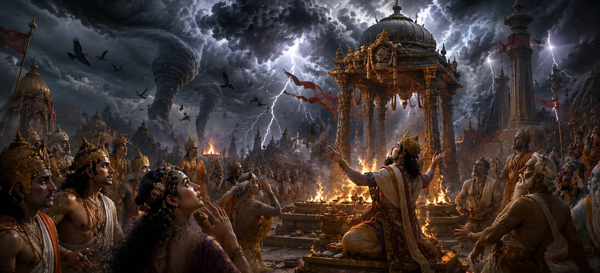

This chapter describes the terrifying omens that appeared at Dakṣa’s sacrifice as Vīrabhadra and Shiva’s divine forces approached. The universe itself seemed to warn those gathered at the sacrifice that a great reckoning was near. Strange disturbances affected the heavens, the earth, and the minds of those present. These ominous signs revealed that the cosmic order had been disturbed and that divine justice was about to manifest.
Unusual and frightening events began to occur throughout nature. Violent winds swept across the sacrificial grounds, the earth trembled beneath the feet of those assembled, and dark clouds gathered in the sky. These signs filled many hearts with fear and uncertainty.
Many sages, priests, and celestial beings present at the sacrifice felt an unexplained sense of dread. Although some attempted to continue the rituals, their minds were troubled by the growing signs that something extraordinary and unsettling was approaching.
Despite the increasing omens, Dakṣa remained unwilling to acknowledge his mistakes. Blinded by pride, he dismissed the warnings that surrounded him. His refusal to recognize the gravity of his actions brought him ever closer to the consequences foretold by the celestial proclamation.
As the omens intensified, it became clear that the forces of divine justice were drawing near. The disturbances were not random events but manifestations of a deeper cosmic truth. The universe itself was responding to the disrespect shown toward Shiva and Sati.
The Divine often provides signs and warnings before major events unfold.
Dakṣa’s refusal to heed the warnings demonstrates the danger of arrogance.
The universe responds when sacred principles are violated.
As the omens continued, fear spread among the participants. Conversations became hushed, rituals lost their confidence, and many wondered whether the sacrifice should continue. The atmosphere of celebration had completely vanished.
Though the sacrifice still continued outwardly, a sense of impending disaster hung over the assembly. The signs pointed toward a dramatic confrontation that would soon transform the destiny of everyone present.
This chapter reminds us that the Divine often provides opportunities for reflection and correction before consequences arrive. Those who remain humble can learn from these signs, while those blinded by pride may ignore them. Wisdom lies in recognizing warnings and aligning ourselves with truth and righteousness.
Even the gods who had gathered to witness the sacrifice became troubled by the ominous signs appearing around them. Many understood that these portents were not ordinary occurrences but indications of a profound disturbance in cosmic harmony. Their hearts filled with concern as they awaited what was to come.
As the warnings intensified, an unusual silence seemed to settle over the sacrificial grounds. Beneath that silence lay an unmistakable sense of approaching judgment. The forces of divine justice were drawing ever closer, and the consequences of Dakṣa’s actions could no longer be delayed.
"When arrogance ignores the signs of truth, destiny arrives as a lesson."
Continue exploring the sacred events of Sati Khanda as ominous signs spread throughout Dakṣa’s sacrifice and Lord Viṣṇu offers guidance to the gods during this moment of cosmic uncertainty.